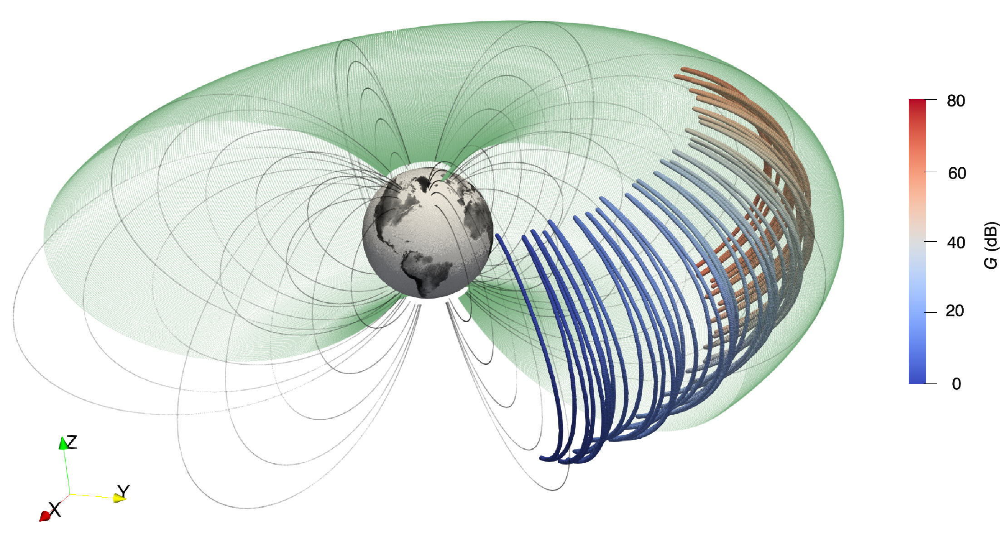
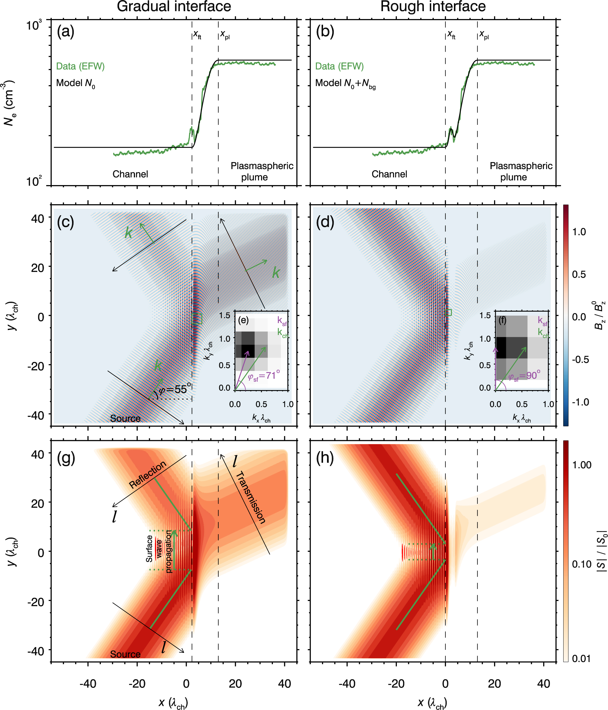

2.1 Plasmaspheric inner boundary layer
The plasmaspheric inner boundary layer serves as a generator for high-frequency magnetosonic waves. High-frequency magnetosonic waves generated in off-equatorial region can be trapped in the plasmaspheric inner boundary layer, bounce along magnetic field lines, and drift around the Earth. When high-frequency magnetosonic waves propagate to the equatorial region, their normal angles deviate significantly from 90o, and their frequencies extend into the range above local lower hybrid frequency. In the plasmaspheric inner boundary layer, where conditions such as magnetic field, density, and proton distribution are relatively stable, high-frequency magnetosonic waves can undergo a prolonged process of cumulative amplification. (Wu et al., GRL, 2021, 2022) 2.2 Plasmaspheric outer boundary layer
The plasmaspheric outer boundary layer serves as a filter for magnetosonic waves. This filtering effect ultimately results in different intensity and frequency distribution characteristics of magnetosonic waves inside and outside the plasmasphere. (Wu et al., GRL, 2023) 